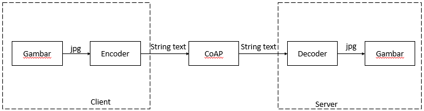

Teknik Pengiriman File menggunakan protokol IoT Part 1: Konsep Dasar Pengiriman File
Konsep dasar pengiriman file di internet dan dengan menggunakan CoAP
Ditulis oleh : Fandi Adinata
pada 08 Juli 2021 19:54 WIB
Pendahuluan
Contrained Application Protocol atau CoAP merupakan sebuah protokol komunikasi yang mirip dengan protokol komunikasi HTTP, hanya saja CoAP lebih dikhususkan untuk perangkat IoT yang didesain untuk menghemat resource.
Jika kita mencari tutorial CoAP di internet, kemungkinan besar kita akan mendapatkan tutorial mengirimkan angka, kalimat, ataupun hal-hal lain yang intinya adalah mencoba mengirim "teks" atau "string" melalui CoAP. Padahal yang ingin kita dapatkan adalah lebih dari itu, seperti mengirim file atau bahkan videostream melalui protokol yang memang dikhususkan untuk dunia IoT, seperti MQTT dan CoAP.
Jika diperhatikan, pengiriman file sebagian besar dilakukan di atas protokol HTTP maupun HTTPS. Sedangkan protokol "IoT" seperti MQTT maupun CoAP hanya digunakan untuk mengirimkan "teks". Masih sangat jarang orang yang membagikan cara pengiriman file melalui protokol IoT seperti MQTT maupun CoAP.
Maka, di sini saya akan membagikan hasil pemikiran saya. Anda boleh memakai ini untuk keperluan Anda secara bebas. Dalam pembahasan ini, saya menggunakan prinsip "pakai yang sudah ada dan simpel".
Dasar Teori
Ada dua pondasi utama dalam pembuatan teknik ini, yaitu (1) File dapat dikonversi ke bentuk yang lain dan (2) tutorial CoAP yang sudah ada di internet.
Pada dasarnya, semua pemindahan data informasi dari satu perangkat ke perangkat lain dilakukan dengan menggunakan bentuk biner (0 dan 1). Setelah menjadi bentuk biner, data informasi ini kemudian dikirimkan dalam bentuk sinyal listrik maupun gelombang elektromagnetik. Ini merupakan hal dasar dalam dunia elektro, komputer, hingga telekomunikasi. Namun walaupun dasar, hal ini justru jarang diingat oleh orang yang bergulat di dunia tersebut.
Dengan membaca paragraf sebelumnya, dapat kita tarik kesimpulan bahwa semua file digital (dengan ekstensi atau format apapun) dapat diubah ke bentuk digital yang lain (contohnya adalah bentuk biner). Hal ini lah yang kemudian yang saya jadikan sebagai pondasi dalam teknik pengiriman file melalui CoAP yang saya kerjakan.
Apabila kita melihat tutorial-tutorial MQTT maupun CoAP di internet, kita akan belajar mengenai pengiriman "teks" atau "string" melalui protokol MQTT maupun CoAP. Tutorial ini dapat kita temukan dengan mudah di google maupun youtube. Saya pun juga belajar dasar penggunaan CoAP dari sini. Dan banyak yang sudah berhasil mempraktikkan cara pengiriman teks melalui CoAP maupun MQTT. Maka dapat saya katakan "tingkat kesuksesan pengiriman teks melalui CoAP maupun MQTT adalah tinggi".
Tutorial "pengiriman teks" memang sudah ada banyak di internet. Lantas hal ini juga saya gunakan sebagai pondasi dari teknik ini. Sebagian besar pengiriman "teks" melalui CoAP dan MQTT tingkat keberhasilannya tinggi.
Dengan memperhatikan dua pondasi utama sebelumnya, maka dapat kita nyatakan bahwa File yang dikonversi ke bentuk teks dapat dikirimkan melalui CoAP dengan tingkat keberhasilan yang tinggi. Untuk lebih jelasnya, Anda dapat mengamati gambar di bawah.
Skema pengiriman file gambar melalui CoAP dari Client ke Server
Sidebar di sini